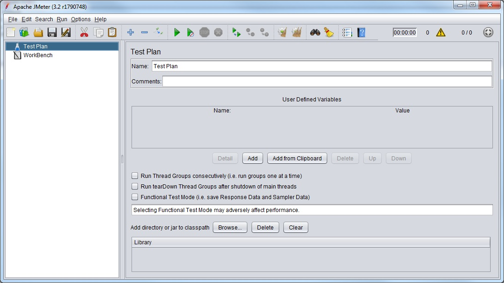
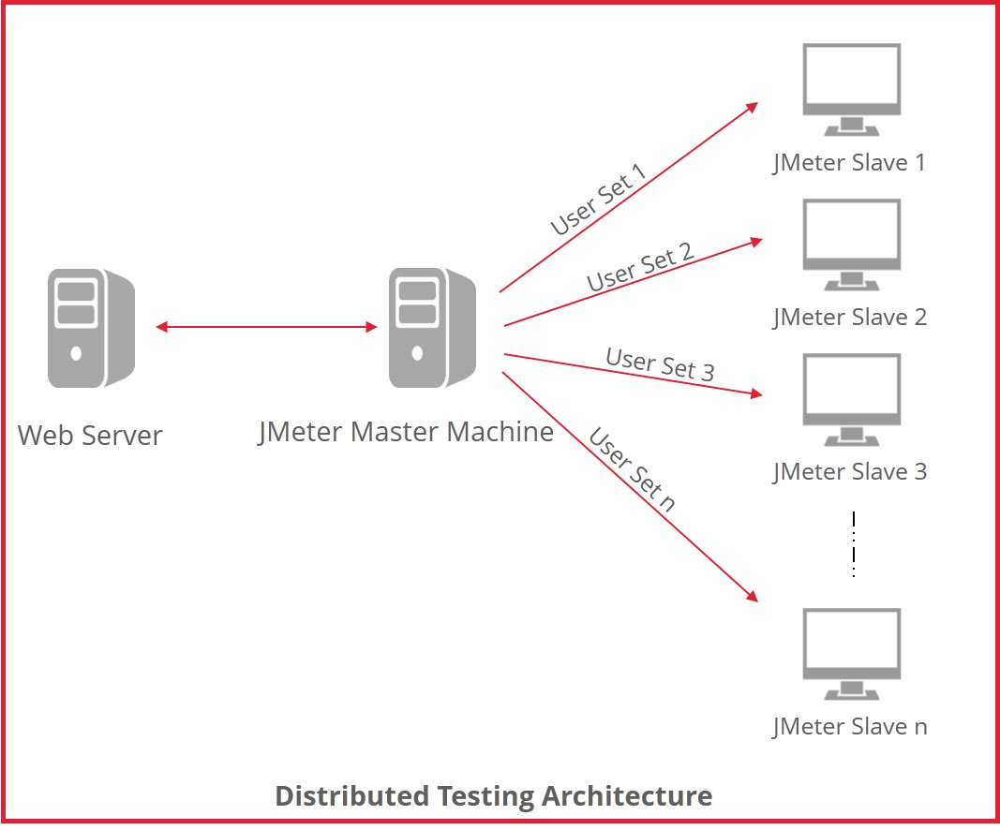

Load Testing with JMeter
Created by Firdaus Kamaruddin
Outline
- What is JMeter
- Getting Started
- Basic Tests
- Testing Overview
- Test Design
- Advanced Topics
- Extending JMeter
- Further Reading
Apache JMeter
JMeter is not a browser
- Web - HTTP, HTTPS (Java, NodeJS, PHP, ASP.NET, …)
- SOAP / REST Webservices
- FTP
- Database via JDBC
- LDAP
- Message-oriented middleware (MOM) via JMS
- Mail - SMTP(S), POP3(S) and IMAP(S)
- TCP
- Java Objects
Apache JMeter
Features
- Multithreaded
- Distributed
- Integrated recording
- Error handling
- Timing & Scheduling
- Extensible
- Scriptable - command line
- extensive report capability
Getting Started
- Download JMeter
- Extract folder
- Run bin/jmeter.sh or bin/jmeter.bat

Simple Test
- Thread Group (test case)
- Sampler (step)
- Listener (reporter)
Basic HTTP Test
- Thread Group
- HTTP Request Sampler
- Timer
- Pre sampler action
- Post sampler action
- Summary Report Listener
Basic JDBC Test
- JDBC Connection Configuration
- JDBC driver jar
- Thread Group
- JDBC Request Sampler
- Summary Report Listener
Report
- Raw result (JTL)
- xml
- csv
- Listener
- Graph
- detail sampler execution result
- save result to jtl/csv/xml format
CSV format
timeStamp,elapsed,label,responseCode,responseMessage,threadName,success,failureMessage,bytes,grpThreads,allThreads,Latency,SampleCount,ErrorCount,Hostname
1503030318170,2362,24 /,200,OK,Thread Group 1-1,true,,4844,3,3,811,1,0,KULMBW-NW70248
1503030318167,2362,001 go to adsight,200,"Number of samples in transaction : 1, number of failing samples : 0",Thread Group 1-1,true,,4844,3,3,811,1,0,KULMBW-NW70248
1503030320534,320,29 /saml/login,200,OK,Thread Group 1-1,true,,5136,3,3,320,1,0,KULMBW-NW70248
1503030319176,2107,24 /,200,OK,Thread Group 1-2,true,,4844,4,4,579,1,0,KULMBW-NW70248
1503030319175,2107,001 go to adsight,200,"Number of samples in transaction : 1, number of failing samples : 0",Thread Group 1-2,true,,4844,4,4,579,1,0,KULMBW-NW70248
1503030321285,318,29 /saml/login,200,OK,Thread Group 1-2,true,,5136,4,4,318,1,0,KULMBW-NW70248
1503030320175,2115,24 /,200,OK,Thread Group 1-3,true,,4844,5,5,581,1,0,KULMBW-NW70248
1503030320174,2115,001 go to adsight,200,"Number of samples in transaction : 1, number of failing samples : 0",Thread Group 1-3,true,,4844,5,5,581,1,0,KULMBW-NW70248
1503030322291,316,29 /saml/login,200,OK,Thread Group 1-3,true,,5136,5,5,316,1,0,KULMBW-NW70248
1503030321169,2107,24 /,200,OK,Thread Group 1-4,true,,4844,5,5,595,1,0,KULMBW-NW70248
1503030321168,2107,001 go to adsight,200,"Number of samples in transaction : 1, number of failing samples : 0",Thread Group 1-4,true,,4844,5,5,595,1,0,KULMBW-NW70248
1503030323276,316,29 /saml/login,200,OK,Thread Group 1-4,true,,5136,5,5,315,1,0,KULMBW-NW70248
1503030322173,2124,24 /,200,OK,Thread Group 1-5,true,,4844,5,5,585,1,0,KULMBW-NW70248
1503030322173,2124,001 go to adsight,200,"Number of samples in transaction : 1, number of failing samples : 0",Thread Group 1-5,true,,4844,5,5,585,1,0,KULMBW-NW70248
1503030324299,320,29 /saml/login,200,OK,Thread Group 1-5,true,,5136,5,5,320,1,0,KULMBW-NW70248
1503030320857,5236,30 /idp/eyJ2c2lkIjoiTUJXOkRFVjpBZHNpZ2h0OlNBTUwyOklkUCJ9/SSO.saml2,200,OK,Thread Group 1-1,true,,33196,5,5,2440,1,0,KULMBW-NW70248
1503030320533,5556,002 click login using one pass,200,"Number of samples in transaction : 2, number of failing samples : 0",Thread Group 1-1,true,,38332,5,5,2760,1,0,KULMBW-NW70248
1503030321604,4935,30 /idp/eyJ2c2lkIjoiTUJXOkRFVjpBZHNpZ2h0OlNBTUwyOklkUCJ9/SSO.saml2,200,OK,Thread Group 1-2,true,,33196,5,5,2133,1,0,KULMBW-NW70248
1503030321284,5253,002 click login using one pass,200,"Number of samples in transaction : 2, number of failing samples : 0",Thread Group 1-2,true,,38332,5,5,2451,1,0,KULMBW-NW70248
1503030322620,5100,30 /idp/eyJ2c2lkIjoiTUJXOkRFVjpBZHNpZ2h0OlNBTUwyOklkUCJ9/SSO.saml2,200,OK,Thread Group 1-3,true,,33196,5,5,2317,1,0,KULMBW-NW70248
1503030322290,5416,002 click login using one pass,200,"Number of samples in transaction : 2, number of failing samples : 0",Thread Group 1-3,true,,38332,5,5,2633,1,0,KULMBW-NW70248
1503030323593,5118,30 /idp/eyJ2c2lkIjoiTUJXOkRFVjpBZHNpZ2h0OlNBTUwyOklkUCJ9/SSO.saml2,200,OK,Thread Group 1-4,true,,33196,5,5,2331,1,0,KULMBW-NW70248
1503030323276,5434,002 click login using one pass,200,"Number of samples in transaction : 2, number of failing samples : 0",Thread Group 1-4,true,,38332,5,5,2646,1,0,KULMBW-NW70248
1503030324620,4906,30 /idp/eyJ2c2lkIjoiTUJXOkRFVjpBZHNpZ2h0OlNBTUwyOklkUCJ9/SSO.saml2,200,OK,Thread Group 1-5,true,,33196,5,5,2130,1,0,KULMBW-NW70248
1503030324298,5226,002 click login using one pass,200,"Number of samples in transaction : 2, number of failing samples : 0",Thread Group 1-5,true,,38332,5,5,2450,1,0,KULMBW-NW70248
1503030326096,4930,43 /OnePass/MainPage?cmd=login&log=y,200,OK,Thread Group 1-1,true,,5774,5,5,3636,1,0,KULMBW-NW70248
1503030328714,2632,43 /OnePass/MainPage?cmd=login&log=y,200,OK,Thread Group 1-4,true,,5769,5,5,1295,1,0,KULMBW-NW70248
1503030326542,4918,43 /OnePass/MainPage?cmd=login&log=y,200,OK,Thread Group 1-2,true,,5764,5,5,3520,1,0,KULMBW-NW70248
1503030329529,2584,43 /OnePass/MainPage?cmd=login&log=y,200,OK,Thread Group 1-5,true,,5822,5,5,1268,1,0,KULMBW-NW70248
1503030327723,4822,43 /OnePass/MainPage?cmd=login&log=y,200,OK,Thread Group 1-3,true,,5832,5,5,3507,1,0,KULMBW-NW70248
1503030331031,2234,46 /saml/SSO,200,OK,Thread Group 1-1,true,,2905,5,5,1631,1,0,KULMBW-NW70248
1503030331348,2170,46 /saml/SSO,200,OK,Thread Group 1-4,true,,2905,5,5,1568,1,0,KULMBW-NW70248
1503030333266,299,56 /campaign/find,200,OK,Thread Group 1-1,true,,784,5,5,299,1,0,KULMBW-NW70248
1503030331462,2209,46 /saml/SSO,200,OK,Thread Group 1-2,true,,2905,5,5,1569,1,0,KULMBW-NW70248
1503030333519,336,56 /campaign/find,200,OK,Thread Group 1-4,true,,784,5,5,336,1,0,KULMBW-NW70248
1503030333566,319,57 /campaign/list,200,OK,Thread Group 1-1,true,,2101,5,5,319,1,0,KULMBW-NW70248
1503030326095,7782,003 login using onepass,200,"Number of samples in transaction : 4, number of failing samples : 0",Thread Group 1-1,true,,11564,5,5,5885,1,0,KULMBW-NW70248
1503030333673,296,56 /campaign/find,200,OK,Thread Group 1-2,true,,784,5,5,296,1,0,KULMBW-NW70248
1503030333857,302,57 /campaign/list,200,OK,Thread Group 1-4,true,,2101,5,5,302,1,0,KULMBW-NW70248
1503030328712,5440,003 login using onepass,200,"Number of samples in transaction : 4, number of failing samples : 0",Thread Group 1-4,true,,11559,5,5,3501,1,0,KULMBW-NW70248
1503030333887,305,61 /client/list,200,OK,Thread Group 1-1,true,,1393,5,5,305,1,0,KULMBW-NW70248
1503030333886,305,004 click client,200,"Number of samples in transaction : 1, number of failing samples : 0",Thread Group 1-1,true,,1393,5,5,305,1,0,KULMBW-NW70248
1503030333971,304,57 /campaign/list,200,OK,Thread Group 1-2,true,,2101,5,5,304,1,0,KULMBW-NW70248
1503030326540,7727,003 login using onepass,200,"Number of samples in transaction : 4, number of failing samples : 0",Thread Group 1-2,true,,11554,5,5,5689,1,0,KULMBW-NW70248
1503030332113,2180,46 /saml/SSO,200,OK,Thread Group 1-5,true,,2905,5,5,1573,1,0,KULMBW-NW70248
1503030334166,299,61 /client/list,200,OK,Thread Group 1-4,true,,1393,5,5,299,1,0,KULMBW-NW70248
1503030334166,299,004 click client,200,"Number of samples in transaction : 1, number of failing samples : 0",Thread Group 1-4,true,,1393,5,5,299,1,0,KULMBW-NW70248
1503030334277,301,61 /client/list,200,OK,Thread Group 1-2,true,,1393,5,5,301,1,0,KULMBW-NW70248
1503030334276,301,004 click client,200,"Number of samples in transaction : 1, number of failing samples : 0",Thread Group 1-2,true,,1393,5,5,301,1,0,KULMBW-NW70248
XML format
<?xml version="1.0" encoding="UTF-8"?>
<testResults version="1.2">
<httpSample t="2307" lt="806" ts="1503037499802" s="true" lb="24 /" rc="200" rm="OK" tn="Thread Group 1-1" by="4844" sc="1" ec="0" ng="2" na="2" hn="KULMBW-NW70248" />
<sample t="2307" lt="806" ts="1503037499801" s="true" lb="001 go to adsight" rc="200" rm="Number of samples in transaction : 1, number of failing samples : 0" tn="Thread Group 1-1" by="4844" sc="1" ec="0" ng="2" na="2" hn="KULMBW-NW70248" />
<httpSample t="317" lt="317" ts="1503037502110" s="true" lb="29 /saml/login" rc="200" rm="OK" tn="Thread Group 1-1" by="5136" sc="1" ec="0" ng="2" na="2" hn="KULMBW-NW70248" />
<httpSample t="2078" lt="591" ts="1503037500799" s="true" lb="24 /" rc="200" rm="OK" tn="Thread Group 1-2" by="4844" sc="1" ec="0" ng="2" na="2" hn="KULMBW-NW70248" />
<sample t="2078" lt="591" ts="1503037500798" s="true" lb="001 go to adsight" rc="200" rm="Number of samples in transaction : 1, number of failing samples : 0" tn="Thread Group 1-2" by="4844" sc="1" ec="0" ng="2" na="2" hn="KULMBW-NW70248" />
<httpSample t="323" lt="323" ts="1503037502878" s="true" lb="29 /saml/login" rc="200" rm="OK" tn="Thread Group 1-2" by="5136" sc="1" ec="0" ng="2" na="2" hn="KULMBW-NW70248" />
<httpSample t="5477" lt="2474" ts="1503037502429" s="true" lb="30 /idp/eyJ2c2lkIjoiTUJXOkRFVjpBZHNpZ2h0OlNBTUwyOklkUCJ9/SSO.saml2" rc="200" rm="OK" tn="Thread Group 1-1" by="33146" sc="1" ec="0" ng="2" na="2" hn="KULMBW-NW70248" />
<sample t="5794" lt="2791" ts="1503037502110" s="true" lb="002 click login using one pass" rc="200" rm="Number of samples in transaction : 2, number of failing samples : 0" tn="Thread Group 1-1" by="38282" sc="1" ec="0" ng="2" na="2" hn="KULMBW-NW70248" />
<httpSample t="5034" lt="2249" ts="1503037503201" s="true" lb="30 /idp/eyJ2c2lkIjoiTUJXOkRFVjpBZHNpZ2h0OlNBTUwyOklkUCJ9/SSO.saml2" rc="200" rm="OK" tn="Thread Group 1-2" by="33146" sc="1" ec="0" ng="2" na="2" hn="KULMBW-NW70248" />
<sample t="5357" lt="2572" ts="1503037502878" s="true" lb="002 click login using one pass" rc="200" rm="Number of samples in transaction : 2, number of failing samples : 0" tn="Thread Group 1-2" by="38282" sc="1" ec="0" ng="2" na="2" hn="KULMBW-NW70248" />
<httpSample t="2670" lt="1315" ts="1503037507910" s="true" lb="43 /OnePass/MainPage?cmd=login&log=y" rc="200" rm="OK" tn="Thread Group 1-1" by="5831" sc="1" ec="0" ng="2" na="2" hn="KULMBW-NW70248" />
<httpSample t="2566" lt="1293" ts="1503037508235" s="true" lb="43 /OnePass/MainPage?cmd=login&log=y" rc="200" rm="OK" tn="Thread Group 1-2" by="5834" sc="1" ec="0" ng="2" na="2" hn="KULMBW-NW70248" />
<httpSample t="2178" lt="1569" ts="1503037510581" s="true" lb="46 /saml/SSO" rc="200" rm="OK" tn="Thread Group 1-1" by="2905" sc="1" ec="0" ng="2" na="2" hn="KULMBW-NW70248" />
<httpSample t="2142" lt="1541" ts="1503037510801" s="true" lb="46 /saml/SSO" rc="200" rm="OK" tn="Thread Group 1-2" by="2905" sc="1" ec="0" ng="2" na="2" hn="KULMBW-NW70248" />
<httpSample t="304" lt="304" ts="1503037512760" s="true" lb="56 /campaign/find" rc="200" rm="OK" tn="Thread Group 1-1" by="784" sc="1" ec="0" ng="2" na="2" hn="KULMBW-NW70248" />
<httpSample t="298" lt="298" ts="1503037512943" s="true" lb="56 /campaign/find" rc="200" rm="OK" tn="Thread Group 1-2" by="784" sc="1" ec="0" ng="2" na="2" hn="KULMBW-NW70248" />
<httpSample t="310" lt="310" ts="1503037513065" s="true" lb="57 /campaign/list" rc="200" rm="OK" tn="Thread Group 1-1" by="2101" sc="1" ec="0" ng="2" na="2" hn="KULMBW-NW70248" />
<sample t="5462" lt="3498" ts="1503037507910" s="true" lb="003 login using onepass" rc="200" rm="Number of samples in transaction : 4, number of failing samples : 0" tn="Thread Group 1-1" by="11621" sc="1" ec="0" ng="2" na="2" hn="KULMBW-NW70248" />
<httpSample t="306" lt="306" ts="1503037513243" s="true" lb="57 /campaign/list" rc="200" rm="OK" tn="Thread Group 1-2" by="2101" sc="1" ec="0" ng="2" na="2" hn="KULMBW-NW70248" />
<sample t="5312" lt="3438" ts="1503037508235" s="true" lb="003 login using onepass" rc="200" rm="Number of samples in transaction : 4, number of failing samples : 0" tn="Thread Group 1-2" by="11624" sc="1" ec="0" ng="2" na="2" hn="KULMBW-NW70248" />
<httpSample t="305" lt="304" ts="1503037513376" s="true" lb="61 /client/list" rc="200" rm="OK" tn="Thread Group 1-1" by="1393" sc="1" ec="0" ng="2" na="2" hn="KULMBW-NW70248" />
<sample t="305" lt="304" ts="1503037513376" s="true" lb="004 click client" rc="200" rm="Number of samples in transaction : 1, number of failing samples : 0" tn="Thread Group 1-1" by="1393" sc="1" ec="0" ng="2" na="2" hn="KULMBW-NW70248" />
<httpSample t="304" lt="304" ts="1503037513551" s="true" lb="61 /client/list" rc="200" rm="OK" tn="Thread Group 1-2" by="1393" sc="1" ec="0" ng="2" na="2" hn="KULMBW-NW70248" />
<sample t="304" lt="304" ts="1503037513551" s="true" lb="004 click client" rc="200" rm="Number of samples in transaction : 1, number of failing samples : 0" tn="Thread Group 1-2" by="1393" sc="1" ec="0" ng="2" na="2" hn="KULMBW-NW70248" />
<httpSample t="1490" lt="299" ts="1503037513681" s="true" lb="62 /saml/logout" rc="200" rm="OK" tn="Thread Group 1-1" by="5168" sc="1" ec="0" ng="2" na="2" hn="KULMBW-NW70248" />
<httpSample t="1498" lt="300" ts="1503037513856" s="true" lb="62 /saml/logout" rc="200" rm="OK" tn="Thread Group 1-2" by="5168" sc="1" ec="0" ng="2" na="2" hn="KULMBW-NW70248" />
<httpSample t="895" lt="595" ts="1503037515172" s="true" lb="63 /" rc="200" rm="OK" tn="Thread Group 1-1" by="4769" sc="1" ec="0" ng="2" na="2" hn="KULMBW-NW70248" />
<sample t="2385" lt="894" ts="1503037513681" s="true" lb="005 logout" rc="200" rm="Number of samples in transaction : 2, number of failing samples : 0" tn="Thread Group 1-1" by="9937" sc="1" ec="0" ng="2" na="2" hn="KULMBW-NW70248" />
<httpSample t="887" lt="584" ts="1503037515354" s="true" lb="63 /" rc="200" rm="OK" tn="Thread Group 1-2" by="4769" sc="1" ec="0" ng="2" na="2" hn="KULMBW-NW70248" />
<sample t="2385" lt="884" ts="1503037513856" s="true" lb="005 logout" rc="200" rm="Number of samples in transaction : 2, number of failing samples : 0" tn="Thread Group 1-2" by="9937" sc="1" ec="0" ng="2" na="2" hn="KULMBW-NW70248" />
<httpSample t="1197" lt="303" ts="1503037516068" s="true" lb="24 /" rc="200" rm="OK" tn="Thread Group 1-1" by="4769" sc="1" ec="0" ng="2" na="2" hn="KULMBW-NW70248" />
<sample t="1197" lt="303" ts="1503037516068" s="true" lb="001 go to adsight" rc="200" rm="Number of samples in transaction : 1, number of failing samples : 0" tn="Thread Group 1-1" by="4769" sc="1" ec="0" ng="2" na="2" hn="KULMBW-NW70248" />
<httpSample t="1191" lt="293" ts="1503037516242" s="true" lb="24 /" rc="200" rm="OK" tn="Thread Group 1-2" by="4769" sc="1" ec="0" ng="2" na="2" hn="KULMBW-NW70248" />
<sample t="1191" lt="293" ts="1503037516242" s="true" lb="001 go to adsight" rc="200" rm="Number of samples in transaction : 1, number of failing samples : 0" tn="Thread Group 1-2" by="4769" sc="1" ec="0" ng="2" na="2" hn="KULMBW-NW70248" />
<httpSample t="314" lt="314" ts="1503037517266" s="true" lb="29 /saml/login" rc="200" rm="OK" tn="Thread Group 1-1" by="5136" sc="1" ec="0" ng="2" na="2" hn="KULMBW-NW70248" />
<httpSample t="313" lt="313" ts="1503037517435" s="true" lb="29 /saml/login" rc="200" rm="OK" tn="Thread Group 1-2" by="5161" sc="1" ec="0" ng="2" na="2" hn="KULMBW-NW70248" />
<httpSample t="3794" lt="1527" ts="1503037517581" s="true" lb="30 /idp/eyJ2c2lkIjoiTUJXOkRFVjpBZHNpZ2h0OlNBTUwyOklkUCJ9/SSO.saml2" rc="200" rm="OK" tn="Thread Group 1-1" by="32694" sc="1" ec="0" ng="2" na="2" hn="KULMBW-NW70248" />
<sample t="4108" lt="1841" ts="1503037517265" s="true" lb="002 click login using one pass" rc="200" rm="Number of samples in transaction : 2, number of failing samples : 0" tn="Thread Group 1-1" by="37830" sc="1" ec="0" ng="2" na="2" hn="KULMBW-NW70248" />
<httpSample t="3869" lt="1577" ts="1503037517748" s="true" lb="30 /idp/eyJ2c2lkIjoiTUJXOkRFVjpBZHNpZ2h0OlNBTUwyOklkUCJ9/SSO.saml2" rc="200" rm="OK" tn="Thread Group 1-2" by="32694" sc="1" ec="0" ng="2" na="2" hn="KULMBW-NW70248" />
<sample t="4182" lt="1890" ts="1503037517435" s="true" lb="002 click login using one pass" rc="200" rm="Number of samples in transaction : 2, number of failing samples : 0" tn="Thread Group 1-2" by="37855" sc="1" ec="0" ng="2" na="2" hn="KULMBW-NW70248" />
<httpSample t="2788" lt="2038" ts="1503037521378" s="true" lb="43 /OnePass/MainPage?cmd=login&log=y" rc="200" rm="OK" tn="Thread Group 1-1" by="32895" sc="1" ec="0" ng="2" na="2" hn="KULMBW-NW70248" />
<httpSample t="2782" lt="2045" ts="1503037521620" s="true" lb="43 /OnePass/MainPage?cmd=login&log=y" rc="200" rm="OK" tn="Thread Group 1-2" by="32895" sc="1" ec="0" ng="2" na="2" hn="KULMBW-NW70248" />
<httpSample t="1886" lt="1577" ts="1503037524168" s="true" lb="46 /saml/SSO" rc="200" rm="OK" tn="Thread Group 1-1" by="2310" sc="1" ec="0" ng="2" na="2" hn="KULMBW-NW70248" />
<httpSample t="1845" lt="1537" ts="1503037524404" s="true" lb="46 /saml/SSO" rc="200" rm="OK" tn="Thread Group 1-2" by="2310" sc="1" ec="0" ng="2" na="2" hn="KULMBW-NW70248" />
<httpSample t="1538" lt="597" ts="1503037526055" s="true" lb="56 /campaign/find" rc="200" rm="OK" tn="Thread Group 1-1" by="4769" sc="1" ec="0" ng="2" na="2" hn="KULMBW-NW70248" />
<httpSample t="1496" lt="591" ts="1503037526249" s="true" lb="56 /campaign/find" rc="200" rm="OK" tn="Thread Group 1-2" by="4769" sc="1" ec="0" ng="2" na="2" hn="KULMBW-NW70248" />
<httpSample t="602" lt="298" ts="1503037527594" s="true" lb="57 /campaign/list" rc="200" rm="OK" tn="Thread Group 1-1" by="4769" sc="1" ec="0" ng="2" na="2" hn="KULMBW-NW70248" />
<sample t="6814" lt="4510" ts="1503037521377" s="true" lb="003 login using onepass" rc="200" rm="Number of samples in transaction : 4, number of failing samples : 0" tn="Thread Group 1-1" by="44743" sc="1" ec="0" ng="2" na="2" hn="KULMBW-NW70248" />
<httpSample t="597" lt="294" ts="1503037527746" s="true" lb="57 /campaign/list" rc="200" rm="OK" tn="Thread Group 1-2" by="4769" sc="1" ec="0" ng="2" na="2" hn="KULMBW-NW70248" />
<sample t="6720" lt="4467" ts="1503037521619" s="true" lb="003 login using onepass" rc="200" rm="Number of samples in transaction : 4, number of failing samples : 0" tn="Thread Group 1-2" by="44743" sc="1" ec="0" ng="2" na="2" hn="KULMBW-NW70248" />
<httpSample t="1497" lt="597" ts="1503037528197" s="true" lb="61 /client/list" rc="200" rm="OK" tn="Thread Group 1-1" by="4769" sc="1" ec="0" ng="2" na="2" hn="KULMBW-NW70248" />
<sample t="1497" lt="597" ts="1503037528196" s="true" lb="004 click client" rc="200" rm="Number of samples in transaction : 1, number of failing samples : 0" tn="Thread Group 1-1" by="4769" sc="1" ec="0" ng="2" na="2" hn="KULMBW-NW70248" />
<httpSample t="1492" lt="598" ts="1503037528344" s="true" lb="61 /client/list" rc="200" rm="OK" tn="Thread Group 1-2" by="4769" sc="1" ec="0" ng="2" na="2" hn="KULMBW-NW70248" />
<sample t="1492" lt="598" ts="1503037528343" s="true" lb="004 click client" rc="200" rm="Number of samples in transaction : 1, number of failing samples : 0" tn="Thread Group 1-2" by="4769" sc="1" ec="0" ng="2" na="2" hn="KULMBW-NW70248" />
<httpSample t="898" lt="297" ts="1503037529695" s="true" lb="62 /saml/logout" rc="200" rm="OK" tn="Thread Group 1-1" by="5168" sc="1" ec="0" ng="2" na="2" hn="KULMBW-NW70248" />
<httpSample t="902" lt="298" ts="1503037529838" s="true" lb="62 /saml/logout" rc="200" rm="OK" tn="Thread Group 1-2" by="5168" sc="1" ec="0" ng="2" na="2" hn="KULMBW-NW70248" />
<httpSample t="1478" lt="586" ts="1503037530594" s="true" lb="63 /" rc="200" rm="OK" tn="Thread Group 1-1" by="4769" sc="1" ec="0" ng="2" na="2" hn="KULMBW-NW70248" />
<sample t="2376" lt="883" ts="1503037529694" s="true" lb="005 logout" rc="200" rm="Number of samples in transaction : 2, number of failing samples : 0" tn="Thread Group 1-1" by="9937" sc="1" ec="0" ng="2" na="2" hn="KULMBW-NW70248" />
<httpSample t="1475" lt="595" ts="1503037530741" s="true" lb="63 /" rc="200" rm="OK" tn="Thread Group 1-2" by="4769" sc="1" ec="0" ng="1" na="1" hn="KULMBW-NW70248" />
<sample t="2377" lt="893" ts="1503037529837" s="true" lb="005 logout" rc="200" rm="Number of samples in transaction : 2, number of failing samples : 0" tn="Thread Group 1-2" by="9937" sc="1" ec="0" ng="1" na="1" hn="KULMBW-NW70248" />
</testResults>
Testing
- Visibility: Black box, Gray box
- Levels: Integration, Component interface, System
- Types: Smoke, Regression, Performance
Testing
- Performance: Best possible response
- Load: Performance with standard traffic
- Stress: Find system breaking point
- Soak/Endurance: memory leakage
- Volume: large data dump
WARNING: May crash your server.
Test Design
- Best performance
- Maximum capacity
- Performance at peak load
- System bottlenecks
- Profiling of system
- How does the system scales?
Advanced Topics
- Parameterize
- Correlation
- Combine test cases
- Multiple nodes
- Run from command line
Parameterize
Built-in Variables
${__threadNum}${__time(EEE\, d MMM yyyy)}Custom variables
${VARIABLE}${sample_size}${__javaScript('${sample_size}'*'${test_variants}')}Correlation
Correlation is the most important aspect of scripting on secure site (saml).
It generally includes fetching dynamic data from preceding requests/calls and posting it to the subsequent requests
- regular expression
- xpath
- json
- JDBC
- custom beanshell/groovy/Java
multiple test cases
- Based on load index model
- replicate real usage on the server
Multiple nodes

Run from command line
jmeter -n -t script.jmx -R 10.10.0.1,10.10.0.2,hostname3
Extending JMeter: Plugins
Standard Set
Extras Set
Further Reading
Extending JMeter: Plugins
Standard Set
Extras Set
Extending JMeter: Customization
- <component_name>.java
- <component_name>BeanInfo.java
- <component_name>Resources.properties
SimplePlugin.java
package devmamak.jmeter.simplePlugin;
import org.apache.jmeter.samplers.AbstractSampler;
import org.apache.jmeter.samplers.Entry;
import org.apache.jmeter.samplers.SampleResult;
import org.apache.jmeter.testbeans.TestBean;
public class SimplePlugin extends AbstractSampler implements TestBean {
private static final long serialVersionUID = 1L;
private String name;
private String say;
public String getName() {
return name;
}
public void setName(String name) {
this.name = name;
}
public String getSay() {
return say;
}
public void setSay(String say) {
this.say = say;
}
@Override
public SampleResult sample(Entry e) {
SampleResult res = new SampleResult();
res.setSampleLabel(getName());
res.sampleStart();
res.setResponseData("Hello Dev@Mamak, "
+ this.name
+ " says that \""
+ this.say + "\"", null);
res.setDataType(SampleResult.TEXT);
res.sampleEnd();
res.setResponseCodeOK();
res.setResponseMessage("yeah, dev@mamak");
res.setSuccessful(true);
return res;
}
}
SimplePluginBeanInfo.java
package devmamak.jmeter.simplePlugin;
import java.beans.PropertyDescriptor;
import org.apache.jmeter.testbeans.BeanInfoSupport;
import org.apache.jmeter.testbeans.gui.TypeEditor;
public class SimplePluginBeanInfo extends BeanInfoSupport {
private PropertyDescriptor getprop(String name, Object deflt) {
PropertyDescriptor p = property(name);
p.setValue(DEFAULT, deflt);
p.setValue(NOT_UNDEFINED, Boolean.TRUE);
return p;
}
public SimplePluginBeanInfo() {
super(SimplePlugin.class);
getprop("name","guys");
property("say", TypeEditor.TextAreaEditor);
}
}
SimplePluginResources.properties
displayName=Dev Mamak Example
name.displayName=Person Name
say.displayName=Person Say
Load Testing with JMeter
https://firdausng.github.io/devmamak-jmeter-presentation/index.html
Contact
Presentation Powered by reveal.js: http://lab.hakim.se/reveal-js/